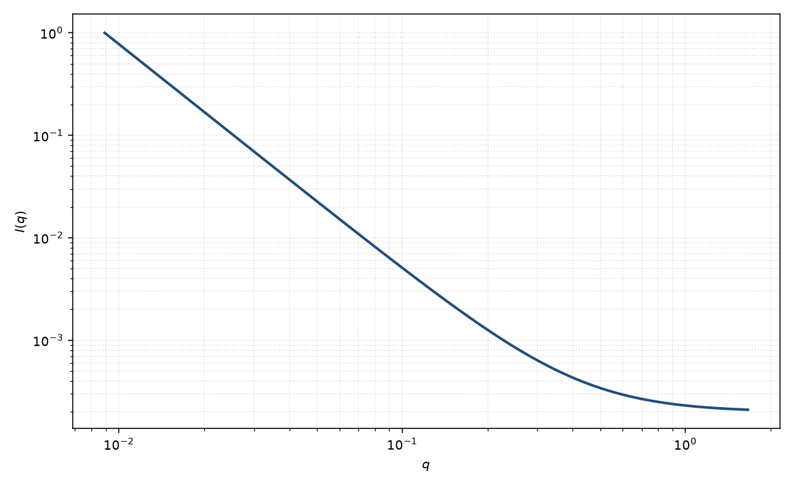

凝胶拟合
gel fit
适用场景
凝胶或玻璃态网络的经验拟合：在 Gauss–Lorentz 之外再允许一段幂律，用来吸收簇、挂链或逾渗网络的中间斜率。它不是唯一的凝胶理论，只是常用的少参数包络。
能用 Gauss–Lorentz 说清时不要加幂律。明确分形凝胶应改用质量分形。
物理图像
三项分别对应：整体/固态不均质的 Guinier 或高斯、网络的 $q^{-n}$、热涨落洛伦兹。参数多，物理解释必须靠样品制备，而不是靠拟合本身。
取向与磁性同凝胶页：拉伸改变所有长度；磁通道可能只有其中一项。
示意图

核心公式
出发点
本式是凝胶/网络的经验包络，不是唯一凝胶理论。三项分别借用：整体不均质的 Guinier 二阶矩、中间标度区的幂律 $\gamma\sim r^{n-3}\Rightarrow q^{-n}$、网格热涨落的 OZ 洛伦兹。是否同时存在须由制备与独立实验约束，而不是由拟合本身证明。
推导
Guinier：$G\exp(-q^2 R_g^2/3)$ 来自有限物体的二阶矩。幂律 $A q^{-n}$ 来自一段 $r^{n-3}$ 相关（与纯幂律页相同），$n$ 不要默认等于 $D_m$。洛伦兹 $C/(1+q^2\xi^2)$ 来自 $\mathrm{e}^{-r/\xi}/r$。线性叠加
$$I(q)=G\exp(-q^2 R_g^2/3)+A q^{-n}+\frac{C}{1+q^2\xi^2}+B.$$没有统一的交叉截断：幂律会进入低 $q$，须靠窗口或人为关掉。能用 Gauss–Lorentz 说清时不要加 $A q^{-n}$。
低 $q$ 与渐近
低 $q$ 由 Guinier 与幂律竞争：若 $n>0$，纯幂律在原点发散，实际须有 $R_g$ 截断才物理。高 $q$ 洛伦兹 $\sim q^{-2}$ 与幂律 $q^{-n}$ 谁主导取决于 $n$ 与本底。三项加本底几乎总能拟合，可辨识性差。
参数表
| 参数 | 符号 | 含义 | 单位 | 典型范围 |
|---|---|---|---|---|
| 回转半径 | $R_g$ | 固态/整体不均质 | Å | 低 $q$ 窗口决定 |
| 网络指数 | $n$ | 中间幂律 | 无量纲 | 通常 $1$–$3$ |
| 热关联长度 | $\xi$ | 洛伦兹分量 | Å | 网格尺度 |
| 标度 / 本底 | $\mathrm{scale}$, $B$ | 前置因子与常数本底 | 与强度单位一致 | 实验相关 |
拟合注意
取向：各项在拉伸后都会变；粉末 $n$ 是平均。
多分散簇与 $n$、$R_g$ 简并。磁性颗粒填充的凝胶：先减去颗粒形式因子，再谈网络项。
可辨识性：三项加本底几乎总能拟合。必须用溶胀系列、对比或流变约束哪些项存在。不要把本页当作形状鉴定。
相近模型
参考文献
- Shibayama, M. Macromol. Chem. Phys. 1998, 199, 1–30. DOI: 10.1002/macp.1998.021990101
- Guinier, A.; Fournet, G. Small-Angle Scattering of X-rays. Wiley: New York, 1955.